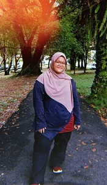
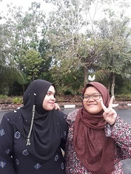
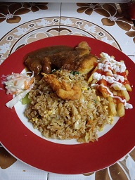

My name is NUR SYAHADAH BINTI SUFFAR RUDDIN. I am 20 years old. I was born on 17 August 2000 at Hospital Taiping, Perak.
I am the youngest of five siblings. Now I live in Kamunting, Perak with my family. I am currently a final semester student studying at UiTM Kedah and taking an Information Management Course
My hobby is sleeping and listening to my favorite songs. I have many dreams to achieve in my life. My life is simple. My life story has a variety of emotions and experiences that make me think more mature and learn a lot in life.
Happiness is not something readymade. It comes from your own actions
Mistakes make you wiser and pain makes you stronger
My Lord, I have never wished evil upon anyone, so protect me from the evil of Your creation
|  |
| My Best Friend |
|---|
|  |
| My Favorite Food |
|  |